L’histoire du
Gué des Moines
C’est en 2016, dans l’ancienne briqueterie de Bruguières, que les cuves du Gué des Moines ont pris place.
Le nom vient de l’avenue du Gamouna, qui signifie « le gué des moines » en languedocien. Cette avenue se trouve à Bruguières, la commune dont Martial, le brasseur et gérant, est originaire.
Nos bières sont aujourd’hui pensées, brassées et embouteillées sur cet ancien site industriel.
Venez nous voir : des visites de la brasserie sont proposées une fois par mois, et notre espace dégustation vous accueille du mercredi au samedi.
Brasserie artisanale · Bruguières · depuis 2016
Pour commander
www.leguedesmoines.com
Le Gué des Moines
31, rue de la Briqueterie
31150 Bruguières
L’abus d’alcool est dangereux pour la santé. À consommer avec modération.

Bières artisanales
& locales
La Bruguièroise · grille tarifaire GMS

Houblon d’Or 2023parmi les meilleures
brasseries françaises
brasseries françaises
Bruguières (31150)